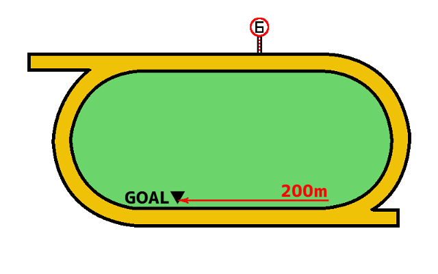
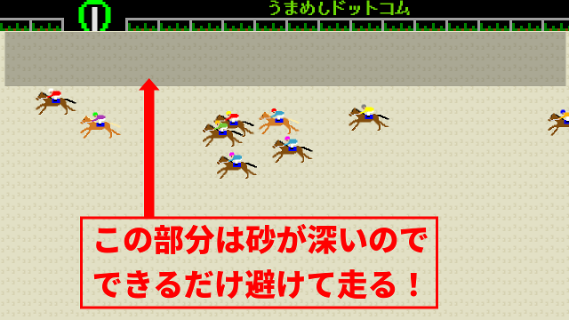
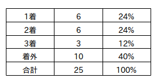

無料メルマガで連日の無料予想と秋G1の極秘情報もGETしよう!!
無料メルマガ登録フォーム
最終更新日：
YouTubeで登録者数6万人のうまめし競馬チャンネルを運営しているうまめし君です！
佐賀競馬場のコース特徴や人気傾向・枠順傾向・脚質傾向・騎手傾向・血統傾向など、馬券に役立つ佐賀競馬必勝法を考案するべく、さまざまな角度から佐賀競馬を攻略して行きたいと思います。
もくじ
詳細
無料メルマガで連日の無料予想と秋G1の極秘情報もGETしよう!!
無料メルマガ登録フォーム
佐賀競馬場のコースは路面は砂を敷き詰めたダートコースのみ。時計回りで1周距離が1100mで最後の直線は200mと短く、さらに緩い下り坂になっているため基本的には逃げ馬に有利な形状になっています。

佐賀競馬のレースを一度でも見た事があれば、なぜインコースの内ラチ沿いをぽっかり空けて走るのか気になった人も多いと思います。

これにはちゃんと理由があって、佐賀競馬場のコースはダートコース（砂）なんですが、固い路盤の上に柔らかい砂を敷いてクッションにしているわけですね。
この砂の深さがインコースになればなるほど深いんですよ。砂が深いと馬の脚が沈み込み、パワーを必要とするし、エネルギーをそれだけ消耗するのにスピードが出ない。
だからと言ってじゃあ外枠から外を通れば有利かと言うと、外枠は当然コーナーで大回りする分距離ロスが発生して有利とは言えません。
なので芝コースで言うグリーンベルトのような丁度良い位置を進める馬の勝率が高いんです。
無料メルマガで連日の無料予想と秋G1の極秘情報もGETしよう!!
無料メルマガ登録フォーム
最初にも言いましたが、佐賀競馬場はインコースの砂が深くなっていて、そこを通るとスタミナを消耗するわりにスピードは出ません。
そのため内枠でモタモタしていると、外から切れ込んで来た馬にインコースの不利なゾーンに押し込められてしまう事があります。
佐賀競馬場での枠順と脚質別の成績を見ていきましょう。
1枠の成績は（1着400回・2着413回・3着437回・着外3236回）で、勝率は8パーセント・連対率は18パーセント・複勝率は27パーセントとなっています。
2枠の成績は（1着439回・2着445回・3着464回・着外3138回）で、勝率は9パーセント・連対率は19パーセント・複勝率は30パーセントとなっています。
3枠の成績は（1着414回・2着439回・3着449回・着外3184回）で、勝率は9パーセント・連対率は19パーセント・複勝率は29パーセントとなっています。
4枠の成績は（1着451回・2着437回・3着442回・着外3156回）で、勝率は10パーセント・連対率は19パーセント・複勝率は29パーセントとなっています。
5枠の成績は（1着534回・2着485回・3着504回・着外3951回）で、勝率は9パーセント・連対率は18パーセント・複勝率は27パーセントとなっています。
6枠の成績は（1着616回・2着665回・3着631回・着外4879回）で、勝率は9パーセント・連対率は18パーセント・複勝率は28パーセントとなっています。
7枠の成績は（1着795回・2着763回・3着764回・着外5570回）で、勝率は10パーセント・連対率は19パーセント・複勝率は29パーセントとなっています。
8枠の成績は（1着831回・2着831回・3着785回・着外5937回）で、勝率は9パーセント・連対率は19パーセント・複勝率は29パーセントとなっています。
下の表は枠を考慮しない脚質成績
| 逃げ | 先行 | 差し | 追込 | |
|---|---|---|---|---|
| 勝 率 | 27% | 12% | 5% | 1% |
| 連対率 | 44% | 26% | 11% | 3% |
| 複勝率 | 55% | 38% | 20% | 8% |
ただ佐賀競馬場は馬場の湿り具合、そして乾き方の具合によって、若干有利不利の変動がありますので、最近馬券に絡んだ枠番を集計した、以下の枠々馬場傾向も参考にしてみてください。
| 日付 | 1 | 2 | 3 | 4 | 5 | 6 | 7 | 8 |
|---|---|---|---|---|---|---|---|---|
| 2026/05/04 | 5 | 2 | 4 | 0 | 6 | 5 | 7 | 4 |
| 2026/05/09 | 5 | 3 | 3 | 6 | 1 | 6 | 7 | 2 |
| 2026/05/10 | 3 | 0 | 1 | 6 | 4 | 4 | 4 | 8 |
| 2026/05/16 | 3 | 3 | 2 | 3 | 4 | 4 | 8 | 3 |
| 2026/05/17 | 3 | 5 | 4 | 2 | 4 | 3 | 3 | 6 |
| 2026/05/18 | 4 | 3 | 3 | 5 | 5 | 3 | 6 | 4 |
| 2026/05/23 | 4 | 4 | 6 | 1 | 4 | 3 | 7 | 1 |
| 2026/05/24 | 7 | 5 | 1 | 2 | 5 | 8 | 3 | 5 |
| 2026/05/30 | 3 | 3 | 1 | 4 | 4 | 5 | 5 | 8 |
| 2026/05/31 | 2 | 7 | 5 | 8 | 3 | 2 | 1 | 5 |
| 2026/06/01 | 2 | 1 | 2 | 5 | 5 | 5 | 5 | 8 |
| 2026/06/06 | 2 | 2 | 6 | 4 | 5 | 8 | 4 | 5 |
佐賀競馬全体で各人気ごとの成績を調べてみると、以下のような結果になりました。（勝率は1着に来た割合・連対率は2着以内・複勝率は3着以内を表しています。）
佐賀競馬場での人気別の成績を見ていきましょう。
1番人気の成績は（1着2086回・2着935回・3着497回・着外958回）で、勝率は46パーセント・連対率は67パーセント・複勝率78パーセントとなっています。
脚質別の馬券に絡むパーセンテージは逃げ：89％・先行：79％・差し：68％・追込：56％となっております。
2番人気の成績は（1着964回・2着1044回・3着748回・着外1718回）で、勝率は21パーセント・連対率は44パーセント・複勝率61パーセントとなっています。
脚質別の馬券に絡むパーセンテージは逃げ：74％・先行：63％・差し：51％・追込：41％となっております。
3番人気の成績は（1着507回・2着792回・3着774回・着外2403回）で、勝率は11パーセント・連対率は29パーセント・複勝率46パーセントとなっています。
脚質別の馬券に絡むパーセンテージは逃げ：59％・先行：49％・差し：38％・追込：26％となっております。
4番人気の成績は（1着335回・2着549回・3着682回・着外2914回）で、勝率は7パーセント・連対率は19パーセント・複勝率34パーセントとなっています。
脚質別の馬券に絡むパーセンテージは逃げ：50％・先行：38％・差し：29％・追込：15％となっております。
5番人気の成績は（1着223回・2着402回・3着545回・着外3295回）で、勝率は4パーセント・連対率は13パーセント・複勝率26パーセントとなっています。
脚質別の馬券に絡むパーセンテージは逃げ：39％・先行：30％・差し：20％・追込：16％となっております。
6番人気の成績は（1着148回・2着304回・3着425回・着外3576回）で、勝率は3パーセント・連対率は10パーセント・複勝率19パーセントとなっています。
脚質別の馬券に絡むパーセンテージは逃げ：31％・先行：23％・差し：16％・追込：10％となっております。
7番人気の成績は（1着103回・2着196回・3着310回・着外3798回）で、勝率は2パーセント・連対率は6パーセント・複勝率13パーセントとなっています。
脚質別の馬券に絡むパーセンテージは逃げ：27％・先行：16％・差し：11％・追込：7％となっております。
8番人気の成績は（1着50回・2着120回・3着225回・着外3902回）で、勝率は1パーセント・連対率は3パーセント・複勝率9パーセントとなっています。
脚質別の馬券に絡むパーセンテージは逃げ：16％・先行：12％・差し：7％・追込：4％となっております。
佐賀競馬場での騎手成績を詳細に見ていきましょう。
飛田愛騎手の成績は510-395-347-1701で、1~4番人気での成績は477-335-258-776で、5番人気以下の人気薄での騎乗成績は33-60-89-925でした。
山口勲騎手の成績は510-368-293-1056で、1~4番人気での成績は494-340-262-638で、5番人気以下の人気薄での騎乗成績は16-28-31-418でした。
石川慎騎手の成績は419-399-350-1448で、1~4番人気での成績は384-326-254-607で、5番人気以下の人気薄での騎乗成績は35-73-96-841でした。
山田貴騎手の成績は351-271-218-1467で、1~4番人気での成績は323-216-151-558で、5番人気以下の人気薄での騎乗成績は28-55-67-909でした。
出水拓騎手の成績は247-282-267-2130で、1~4番人気での成績は206-203-154-484で、5番人気以下の人気薄での騎乗成績は41-79-113-1646でした。
金山昇騎手の成績は214-237-246-1909で、1~4番人気での成績は175-160-150-461で、5番人気以下の人気薄での騎乗成績は39-77-96-1448でした。
竹吉徹騎手の成績は211-247-286-1789で、1~4番人気での成績は171-171-165-507で、5番人気以下の人気薄での騎乗成績は40-76-121-1282でした。
山下裕騎手の成績は210-216-207-1674で、1~4番人気での成績は175-160-128-401で、5番人気以下の人気薄での騎乗成績は35-56-79-1273でした。
川島拓騎手の成績は194-264-273-2099で、1~4番人気での成績は164-188-146-398で、5番人気以下の人気薄での騎乗成績は30-76-127-1701でした。
加茂飛騎手の成績は179-192-234-1944で、1~4番人気での成績は157-137-121-369で、5番人気以下の人気薄での騎乗成績は22-55-113-1575でした。
倉富隆騎手の成績は174-128-115-831で、1~4番人気での成績は144-107-76-230で、5番人気以下の人気薄での騎乗成績は30-21-39-601でした。
田中直騎手の成績は172-213-226-1834で、1~4番人気での成績は144-144-113-340で、5番人気以下の人気薄での騎乗成績は28-69-113-1494でした。
石川倭騎手の成績は153-109-74-251で、1~4番人気での成績は147-100-65-152で、5番人気以下の人気薄での騎乗成績は6-9-9-99でした。
田中純騎手の成績は132-161-180-1373で、1~4番人気での成績は109-117-97-290で、5番人気以下の人気薄での騎乗成績は23-44-83-1083でした。
中山蓮騎手の成績は105-133-185-1809で、1~4番人気での成績は77-74-72-275で、5番人気以下の人気薄での騎乗成績は28-59-113-1534でした。
長田進騎手の成績は99-153-149-1565で、1~4番人気での成績は75-88-64-224で、5番人気以下の人気薄での騎乗成績は24-65-85-1341でした。
小松丈騎手の成績は80-92-113-1312で、1~4番人気での成績は55-49-53-185で、5番人気以下の人気薄での騎乗成績は25-43-60-1127でした。
村松翔騎手の成績は78-96-93-913で、1~4番人気での成績は62-67-49-133で、5番人気以下の人気薄での騎乗成績は16-29-44-780でした。
青海大騎手の成績は74-119-140-1778で、1~4番人気での成績は51-62-54-199で、5番人気以下の人気薄での騎乗成績は23-57-86-1579でした。
小林凌騎手の成績は31-29-24-429で、1~4番人気での成績は23-13-11-49で、5番人気以下の人気薄での騎乗成績は8-16-13-380でした。
合林海騎手の成績は29-40-52-882で、1~4番人気での成績は21-23-24-98で、5番人気以下の人気薄での騎乗成績は8-17-28-784でした。
吉本隆騎手の成績は25-31-38-334で、1~4番人気での成績は15-15-15-55で、5番人気以下の人気薄での騎乗成績は10-16-23-279でした。
及川烈騎手の成績は16-17-10-217で、1~4番人気での成績は15-10-4-30で、5番人気以下の人気薄での騎乗成績は1-7-6-187でした。
松井伸騎手の成績は11-19-27-196で、1~4番人気での成績は8-13-13-36で、5番人気以下の人気薄での騎乗成績は3-6-14-160でした。
宮内勇騎手の成績は10-9-15-60で、1~4番人気での成績は10-6-11-10で、5番人気以下の人気薄での騎乗成績は0-3-4-50でした。
吉原寛騎手の成績は10-3-3-12で、1~4番人気での成績は10-3-2-6で、5番人気以下の人気薄での騎乗成績は0-0-1-6でした。
渡邊竜騎手の成績は9-5-4-8で、1~4番人気での成績は9-5-3-2で、5番人気以下の人気薄での騎乗成績は0-0-1-6でした。
山本咲騎手の成績は8-6-8-26で、1~4番人気での成績は6-3-6-9で、5番人気以下の人気薄での騎乗成績は2-3-2-17でした。
下原理騎手の成績は8-2-3-20で、1~4番人気での成績は7-2-2-9で、5番人気以下の人気薄での騎乗成績は1-0-1-11でした。
和田譲騎手の成績は6-1-2-4で、1~4番人気での成績は6-1-2-2で、5番人気以下の人気薄での騎乗成績は0-0-0-2でした。
赤岡修騎手の成績は4-4-2-9で、1~4番人気での成績は4-3-2-5で、5番人気以下の人気薄での騎乗成績は0-1-0-4でした。
吉村智騎手の成績は4-4-3-13で、1~4番人気での成績は4-4-2-11で、5番人気以下の人気薄での騎乗成績は0-0-1-2でした。
大山真騎手の成績は3-2-3-19で、1~4番人気での成績は3-2-3-6で、5番人気以下の人気薄での騎乗成績は0-0-0-13でした。
多田誠騎手の成績は3-1-1-4で、1~4番人気での成績は3-1-1-1で、5番人気以下の人気薄での騎乗成績は0-0-0-3でした。
山本聡騎手の成績は3-4-0-14で、1~4番人気での成績は3-4-0-6で、5番人気以下の人気薄での騎乗成績は0-0-0-8でした。
笹川翼騎手の成績は3-3-3-12で、1~4番人気での成績は3-3-1-7で、5番人気以下の人気薄での騎乗成績は0-0-2-5でした。
永森大騎手の成績は3-0-0-1で、1~4番人気での成績は3-0-0-0で、5番人気以下の人気薄での騎乗成績は0-0-0-1でした。
阿部龍騎手の成績は3-0-3-7で、1~4番人気での成績は3-0-1-4で、5番人気以下の人気薄での騎乗成績は0-0-2-3でした。
野畑凌騎手の成績は2-1-3-10で、1~4番人気での成績は2-1-3-6で、5番人気以下の人気薄での騎乗成績は0-0-0-4でした。
筒井勇騎手の成績は2-0-1-6で、1~4番人気での成績は2-0-1-2で、5番人気以下の人気薄での騎乗成績は0-0-0-4でした。
塚本征騎手の成績は2-0-1-3で、1~4番人気での成績は2-0-1-2で、5番人気以下の人気薄での騎乗成績は0-0-0-1でした。
長尾翼騎手の成績は2-4-6-62で、1~4番人気での成績は2-2-3-8で、5番人気以下の人気薄での騎乗成績は0-2-3-54でした。
西森将騎手の成績は2-7-13-178で、1~4番人気での成績は1-6-2-12で、5番人気以下の人気薄での騎乗成績は1-1-11-166でした。
小沢大騎手の成績は2-0-0-0で、1~4番人気での成績は1-0-0-0で、5番人気以下の人気薄での騎乗成績は1-0-0-0でした。
小崎綾騎手の成績は2-0-0-0で、1~4番人気での成績は2-0-0-0で、5番人気以下の人気薄での騎乗成績は0-0-0-0でした。
秋山稔騎手の成績は2-0-0-4で、1~4番人気での成績は2-0-0-2で、5番人気以下の人気薄での騎乗成績は0-0-0-2でした。
桑村真騎手の成績は2-1-0-5で、1~4番人気での成績は2-1-0-2で、5番人気以下の人気薄での騎乗成績は0-0-0-3でした。
魚住謙騎手の成績は2-3-4-43で、1~4番人気での成績は2-2-0-7で、5番人気以下の人気薄での騎乗成績は0-1-4-36でした。
丸山元騎手の成績は2-1-0-4で、1~4番人気での成績は2-1-0-2で、5番人気以下の人気薄での騎乗成績は0-0-0-2でした。
関本玲騎手の成績は2-0-0-4で、1~4番人気での成績は1-0-0-0で、5番人気以下の人気薄での騎乗成績は1-0-0-4でした。
永島ま騎手の成績は2-1-0-4で、1~4番人気での成績は2-1-0-3で、5番人気以下の人気薄での騎乗成績は0-0-0-1でした。
永井孝騎手の成績は2-1-3-0で、1~4番人気での成績は2-1-1-0で、5番人気以下の人気薄での騎乗成績は0-0-2-0でした。
櫻井光騎手の成績は1-0-0-3で、1~4番人気での成績は0-0-0-2で、5番人気以下の人気薄での騎乗成績は1-0-0-1でした。
林謙佑騎手の成績は1-0-0-5で、1~4番人気での成績は1-0-0-0で、5番人気以下の人気薄での騎乗成績は0-0-0-5でした。
木之葵騎手の成績は1-0-2-6で、1~4番人気での成績は1-0-0-1で、5番人気以下の人気薄での騎乗成績は0-0-2-5でした。
福永祐騎手の成績は1-0-0-0で、1~4番人気での成績は1-0-0-0で、5番人気以下の人気薄での騎乗成績は0-0-0-0でした。
服部茂騎手の成績は1-0-1-4で、1~4番人気での成績は1-0-0-0で、5番人気以下の人気薄での騎乗成績は0-0-1-4でした。
武 豊騎手の成績は1-1-0-2で、1~4番人気での成績は1-1-0-2で、5番人気以下の人気薄での騎乗成績は0-0-0-0でした。
土田真騎手の成績は1-0-0-2で、1~4番人気での成績は0-0-0-1で、5番人気以下の人気薄での騎乗成績は1-0-0-1でした。
渡瀬和騎手の成績は1-0-0-10で、1~4番人気での成績は0-0-0-3で、5番人気以下の人気薄での騎乗成績は1-0-0-7でした。
田野豊騎手の成績は1-0-1-4で、1~4番人気での成績は0-0-1-1で、5番人気以下の人気薄での騎乗成績は1-0-0-3でした。
長谷駿騎手の成績は1-2-2-14で、1~4番人気での成績は1-2-1-2で、5番人気以下の人気薄での騎乗成績は0-0-1-12でした。
張田昂騎手の成績は1-0-0-0で、1~4番人気での成績は1-0-0-0で、5番人気以下の人気薄での騎乗成績は0-0-0-0でした。
丹内祐騎手の成績は1-3-0-2で、1~4番人気での成績は1-3-0-2で、5番人気以下の人気薄での騎乗成績は0-0-0-0でした。
大畑慧騎手の成績は1-0-0-1で、1~4番人気での成績は1-0-0-0で、5番人気以下の人気薄での騎乗成績は0-0-0-1でした。
大畑雅騎手の成績は1-0-0-3で、1~4番人気での成績は0-0-0-0で、5番人気以下の人気薄での騎乗成績は1-0-0-3でした。
川田将騎手の成績は1-2-0-2で、1~4番人気での成績は1-2-0-2で、5番人気以下の人気薄での騎乗成績は0-0-0-0でした。
川端海騎手の成績は1-1-1-10で、1~4番人気での成績は1-0-0-2で、5番人気以下の人気薄での騎乗成績は0-1-1-8でした。
川須栄騎手の成績は1-0-0-1で、1~4番人気での成績は1-0-0-1で、5番人気以下の人気薄での騎乗成績は0-0-0-0でした。
川原正騎手の成績は1-0-1-4で、1~4番人気での成績は1-0-0-2で、5番人気以下の人気薄での騎乗成績は0-0-1-2でした。
石橋脩騎手の成績は1-0-0-0で、1~4番人気での成績は1-0-0-0で、5番人気以下の人気薄での騎乗成績は0-0-0-0でした。
西村淳騎手の成績は1-0-0-0で、1~4番人気での成績は1-0-0-0で、5番人気以下の人気薄での騎乗成績は0-0-0-0でした。
松本一騎手の成績は1-0-0-1で、1~4番人気での成績は1-0-0-0で、5番人気以下の人気薄での騎乗成績は0-0-0-1でした。
酒井学騎手の成績は1-1-2-0で、1~4番人気での成績は0-0-2-0で、5番人気以下の人気薄での騎乗成績は1-1-0-0でした。
山本政騎手の成績は1-0-0-1で、1~4番人気での成績は1-0-0-0で、5番人気以下の人気薄での騎乗成績は0-0-0-1でした。
山田祥騎手の成績は1-0-0-0で、1~4番人気での成績は1-0-0-0で、5番人気以下の人気薄での騎乗成績は0-0-0-0でした。
鮫島駿騎手の成績は1-0-2-2で、1~4番人気での成績は1-0-2-2で、5番人気以下の人気薄での騎乗成績は0-0-0-0でした。
今村聖騎手の成績は1-2-0-7で、1~4番人気での成績は1-1-0-3で、5番人気以下の人気薄での騎乗成績は0-1-0-4でした。
高橋愛騎手の成績は1-3-2-14で、1~4番人気での成績は0-3-1-3で、5番人気以下の人気薄での騎乗成績は1-0-1-11でした。
幸英明騎手の成績は1-0-2-1で、1~4番人気での成績は1-0-2-1で、5番人気以下の人気薄での騎乗成績は0-0-0-0でした。
岩田望騎手の成績は1-0-0-1で、1~4番人気での成績は1-0-0-0で、5番人気以下の人気薄での騎乗成績は0-0-0-1でした。
鴨宮祥騎手の成績は1-0-0-8で、1~4番人気での成績は1-0-0-1で、5番人気以下の人気薄での騎乗成績は0-0-0-7でした。
河原菜騎手の成績は1-1-1-3で、1~4番人気での成績は1-1-1-1で、5番人気以下の人気薄での騎乗成績は0-0-0-2でした。
横山武騎手の成績は1-1-0-1で、1~4番人気での成績は1-1-0-1で、5番人気以下の人気薄での騎乗成績は0-0-0-0でした。
Ｍデム騎手の成績は1-0-0-0で、1~4番人気での成績は1-0-0-0で、5番人気以下の人気薄での騎乗成績は0-0-0-0でした。
濱中俊騎手の成績は0-1-0-0で、1~4番人気での成績は0-1-0-0で、5番人気以下の人気薄での騎乗成績は0-0-0-0でした。
濱尚美騎手の成績は0-0-0-3で、1~4番人気での成績は0-0-0-2で、5番人気以下の人気薄での騎乗成績は0-0-0-1でした。
澤田龍騎手の成績は0-0-5-15で、1~4番人気での成績は0-0-2-5で、5番人気以下の人気薄での騎乗成績は0-0-3-10でした。
廣瀬航騎手の成績は0-1-2-5で、1~4番人気での成績は0-1-1-2で、5番人気以下の人気薄での騎乗成績は0-0-1-3でした。
團野大騎手の成績は0-0-0-4で、1~4番人気での成績は0-0-0-3で、5番人気以下の人気薄での騎乗成績は0-0-0-1でした。
國分優騎手の成績は0-0-1-1で、1~4番人気での成績は0-0-1-0で、5番人気以下の人気薄での騎乗成績は0-0-0-1でした。
鷲頭虎騎手の成績は0-0-1-1で、1~4番人気での成績は0-0-1-0で、5番人気以下の人気薄での騎乗成績は0-0-0-1でした。
和田竜騎手の成績は0-1-0-0で、1~4番人気での成績は0-1-0-0で、5番人気以下の人気薄での騎乗成績は0-0-0-0でした。
鈴木祐騎手の成績は0-0-0-2で、1~4番人気での成績は0-0-0-0で、5番人気以下の人気薄での騎乗成績は0-0-0-2でした。
落合玄騎手の成績は0-2-0-11で、1~4番人気での成績は0-1-0-5で、5番人気以下の人気薄での騎乗成績は0-1-0-6でした。
矢野貴騎手の成績は0-1-0-2で、1~4番人気での成績は0-1-0-2で、5番人気以下の人気薄での騎乗成績は0-0-0-0でした。
明星晴騎手の成績は0-0-0-2で、1~4番人気での成績は0-0-0-0で、5番人気以下の人気薄での騎乗成績は0-0-0-2でした。
本田重騎手の成績は0-1-0-0で、1~4番人気での成績は0-1-0-0で、5番人気以下の人気薄での騎乗成績は0-0-0-0でした。
本橋孝騎手の成績は0-0-0-1で、1~4番人気での成績は0-0-0-1で、5番人気以下の人気薄での騎乗成績は0-0-0-0でした。
富田暁騎手の成績は0-1-0-0で、1~4番人気での成績は0-1-0-0で、5番人気以下の人気薄での騎乗成績は0-0-0-0でした。
畑中信騎手の成績は0-1-0-0で、1~4番人気での成績は0-0-0-0で、5番人気以下の人気薄での騎乗成績は0-1-0-0でした。
藤本現騎手の成績は0-0-1-6で、1~4番人気での成績は0-0-1-2で、5番人気以下の人気薄での騎乗成績は0-0-0-4でした。
藤田菜騎手の成績は0-1-0-3で、1~4番人気での成績は0-1-0-2で、5番人気以下の人気薄での騎乗成績は0-0-0-1でした。
藤原幹騎手の成績は0-0-0-2で、1~4番人気での成績は0-0-0-0で、5番人気以下の人気薄での騎乗成績は0-0-0-2でした。
藤懸貴騎手の成績は0-0-0-1で、1~4番人気での成績は0-0-0-1で、5番人気以下の人気薄での騎乗成績は0-0-0-0でした。
藤岡康騎手の成績は0-0-0-1で、1~4番人気での成績は0-0-0-0で、5番人気以下の人気薄での騎乗成績は0-0-0-1でした。
田中健騎手の成績は0-0-0-1で、1~4番人気での成績は0-0-0-1で、5番人気以下の人気薄での騎乗成績は0-0-0-0でした。
田中学騎手の成績は0-0-1-0で、1~4番人気での成績は0-0-1-0で、5番人気以下の人気薄での騎乗成績は0-0-0-0でした。
田口貫騎手の成績は0-0-1-3で、1~4番人気での成績は0-0-1-3で、5番人気以下の人気薄での騎乗成績は0-0-0-0でした。
的場文騎手の成績は0-0-1-6で、1~4番人気での成績は0-0-1-1で、5番人気以下の人気薄での騎乗成績は0-0-0-5でした。
長浜鴻騎手の成績は0-0-0-2で、1~4番人気での成績は0-0-0-1で、5番人気以下の人気薄での騎乗成績は0-0-0-1でした。
中島良騎手の成績は0-0-1-2で、1~4番人気での成績は0-0-0-0で、5番人気以下の人気薄での騎乗成績は0-0-1-2でした。
中島龍騎手の成績は0-1-0-0で、1~4番人気での成績は0-0-0-0で、5番人気以下の人気薄での騎乗成績は0-1-0-0でした。
中田貴騎手の成績は0-0-0-7で、1~4番人気での成績は0-0-0-1で、5番人気以下の人気薄での騎乗成績は0-0-0-6でした。
中井裕騎手の成績は0-0-0-1で、1~4番人気での成績は0-0-0-1で、5番人気以下の人気薄での騎乗成績は0-0-0-0でした。
池田敦騎手の成績は0-0-1-0で、1~4番人気での成績は0-0-0-0で、5番人気以下の人気薄での騎乗成績は0-0-1-0でした。
大坪慎騎手の成績は0-0-1-1で、1~4番人気での成績は0-0-0-0で、5番人気以下の人気薄での騎乗成績は0-0-1-1でした。
大山龍騎手の成績は0-0-0-2で、1~4番人気での成績は0-0-0-1で、5番人気以下の人気薄での騎乗成績は0-0-0-1でした。
大久友騎手の成績は0-0-0-2で、1~4番人気での成績は0-0-0-1で、5番人気以下の人気薄での騎乗成績は0-0-0-1でした。
黛弘人騎手の成績は0-0-1-0で、1~4番人気での成績は0-0-0-0で、5番人気以下の人気薄での騎乗成績は0-0-1-0でした。
太宰啓騎手の成績は0-0-0-1で、1~4番人気での成績は0-0-0-1で、5番人気以下の人気薄での騎乗成績は0-0-0-0でした。
村上忍騎手の成績は0-0-0-2で、1~4番人気での成績は0-0-0-1で、5番人気以下の人気薄での騎乗成績は0-0-0-1でした。
浅野皓騎手の成績は0-0-0-5で、1~4番人気での成績は0-0-0-0で、5番人気以下の人気薄での騎乗成績は0-0-0-5でした。
泉谷楓騎手の成績は0-0-0-2で、1~4番人気での成績は0-0-0-1で、5番人気以下の人気薄での騎乗成績は0-0-0-1でした。
川又賢騎手の成績は0-0-1-0で、1~4番人気での成績は0-0-0-0で、5番人気以下の人気薄での騎乗成績は0-0-1-0でした。
石堂響騎手の成績は0-1-1-10で、1~4番人気での成績は0-0-1-1で、5番人気以下の人気薄での騎乗成績は0-1-0-9でした。
石田拓騎手の成績は0-0-0-1で、1~4番人気での成績は0-0-0-0で、5番人気以下の人気薄での騎乗成績は0-0-0-1でした。
石神道騎手の成績は0-0-1-2で、1~4番人気での成績は0-0-0-0で、5番人気以下の人気薄での騎乗成績は0-0-1-2でした。
菅原辰騎手の成績は0-0-0-7で、1~4番人気での成績は0-0-0-2で、5番人気以下の人気薄での騎乗成績は0-0-0-5でした。
杉浦健騎手の成績は0-1-0-4で、1~4番人気での成績は0-0-0-0で、5番人気以下の人気薄での騎乗成績は0-1-0-4でした。
水沼元騎手の成績は0-0-0-2で、1~4番人気での成績は0-0-0-1で、5番人気以下の人気薄での騎乗成績は0-0-0-1でした。
神尾香騎手の成績は0-0-2-2で、1~4番人気での成績は0-0-1-0で、5番人気以下の人気薄での騎乗成績は0-0-1-2でした。
真島大騎手の成績は0-0-0-2で、1~4番人気での成績は0-0-0-0で、5番人気以下の人気薄での騎乗成績は0-0-0-2でした。
深澤杏騎手の成績は0-0-0-2で、1~4番人気での成績は0-0-0-1で、5番人気以下の人気薄での騎乗成績は0-0-0-1でした。
森裕太騎手の成績は0-0-0-1で、1~4番人気での成績は0-0-0-1で、5番人気以下の人気薄での騎乗成績は0-0-0-0でした。
新庄海騎手の成績は0-0-1-6で、1~4番人気での成績は0-0-0-0で、5番人気以下の人気薄での騎乗成績は0-0-1-6でした。
城野慈騎手の成績は0-0-0-6で、1~4番人気での成績は0-0-0-1で、5番人気以下の人気薄での騎乗成績は0-0-0-5でした。
城戸義騎手の成績は0-0-0-6で、1~4番人気での成績は0-0-0-3で、5番人気以下の人気薄での騎乗成績は0-0-0-3でした。
上田将騎手の成績は0-0-0-2で、1~4番人気での成績は0-0-0-0で、5番人気以下の人気薄での騎乗成績は0-0-0-2でした。
松木大騎手の成績は0-0-1-9で、1~4番人気での成績は0-0-0-1で、5番人気以下の人気薄での騎乗成績は0-0-1-8でした。
松本剛騎手の成績は0-0-0-2で、1~4番人気での成績は0-0-0-0で、5番人気以下の人気薄での騎乗成績は0-0-0-2でした。
松若風騎手の成績は0-0-0-3で、1~4番人気での成績は0-0-0-1で、5番人気以下の人気薄での騎乗成績は0-0-0-2でした。
松山弘騎手の成績は0-0-0-1で、1~4番人気での成績は0-0-0-1で、5番人気以下の人気薄での騎乗成績は0-0-0-0でした。
松岡正騎手の成績は0-1-0-0で、1~4番人気での成績は0-0-0-0で、5番人気以下の人気薄での騎乗成績は0-1-0-0でした。
小牧太騎手の成績は0-2-2-5で、1~4番人気での成績は0-2-0-2で、5番人気以下の人気薄での騎乗成績は0-0-2-3でした。
柴田裕騎手の成績は0-0-0-4で、1~4番人気での成績は0-0-0-1で、5番人気以下の人気薄での騎乗成績は0-0-0-3でした。
山本太騎手の成績は0-0-1-3で、1~4番人気での成績は0-0-1-0で、5番人気以下の人気薄での騎乗成績は0-0-0-3でした。
山崎雅騎手の成績は0-0-0-5で、1~4番人気での成績は0-0-0-1で、5番人気以下の人気薄での騎乗成績は0-0-0-4でした。
笹田知騎手の成績は0-2-0-3で、1~4番人気での成績は0-2-0-2で、5番人気以下の人気薄での騎乗成績は0-0-0-1でした。
坂井瑠騎手の成績は0-0-1-3で、1~4番人気での成績は0-0-1-2で、5番人気以下の人気薄での騎乗成績は0-0-0-1でした。
坂井瑛騎手の成績は0-1-0-1で、1~4番人気での成績は0-0-0-1で、5番人気以下の人気薄での騎乗成績は0-1-0-0でした。
佐々大騎手の成績は0-0-0-1で、1~4番人気での成績は0-0-0-0で、5番人気以下の人気薄での騎乗成績は0-0-0-1でした。
佐々世騎手の成績は0-3-0-4で、1~4番人気での成績は0-2-0-2で、5番人気以下の人気薄での騎乗成績は0-1-0-2でした。
佐々志騎手の成績は0-0-0-2で、1~4番人気での成績は0-0-0-1で、5番人気以下の人気薄での騎乗成績は0-0-0-1でした。
高倉稜騎手の成績は0-0-0-1で、1~4番人気での成績は0-0-0-1で、5番人気以下の人気薄での騎乗成績は0-0-0-0でした。
高杉吏騎手の成績は0-1-0-1で、1~4番人気での成績は0-1-0-0で、5番人気以下の人気薄での騎乗成績は0-0-0-1でした。
高橋悠騎手の成績は0-0-0-2で、1~4番人気での成績は0-0-0-0で、5番人気以下の人気薄での騎乗成績は0-0-0-2でした。
御神訓騎手の成績は0-0-0-2で、1~4番人気での成績は0-0-0-0で、5番人気以下の人気薄での騎乗成績は0-0-0-2でした。
戸崎圭騎手の成績は0-0-0-1で、1~4番人気での成績は0-0-0-1で、5番人気以下の人気薄での騎乗成績は0-0-0-0でした。
古川奈騎手の成績は0-0-0-4で、1~4番人気での成績は0-0-0-1で、5番人気以下の人気薄での騎乗成績は0-0-0-3でした。
原優介騎手の成績は0-0-0-1で、1~4番人気での成績は0-0-0-0で、5番人気以下の人気薄での騎乗成績は0-0-0-1でした。
兼子千騎手の成績は0-0-0-2で、1~4番人気での成績は0-0-0-0で、5番人気以下の人気薄での騎乗成績は0-0-0-2でした。
橋木太騎手の成績は0-2-1-2で、1~4番人気での成績は0-1-0-1で、5番人気以下の人気薄での騎乗成績は0-1-1-1でした。
宮川実騎手の成績は0-0-1-0で、1~4番人気での成績は0-0-1-0で、5番人気以下の人気薄での騎乗成績は0-0-0-0でした。
宮下瞳騎手の成績は0-1-2-7で、1~4番人気での成績は0-1-2-2で、5番人気以下の人気薄での騎乗成績は0-0-0-5でした。
吉留孝騎手の成績は0-0-0-3で、1~4番人気での成績は0-0-0-1で、5番人気以下の人気薄での騎乗成績は0-0-0-2でした。
吉村誠騎手の成績は0-0-2-0で、1~4番人気での成績は0-0-1-0で、5番人気以下の人気薄での騎乗成績は0-0-1-0でした。
岩橋勇騎手の成績は0-0-0-5で、1~4番人気での成績は0-0-0-2で、5番人気以下の人気薄での騎乗成績は0-0-0-3でした。
丸野勝騎手の成績は0-1-1-7で、1~4番人気での成績は0-1-1-0で、5番人気以下の人気薄での騎乗成績は0-0-0-7でした。
角田大騎手の成績は0-0-1-3で、1~4番人気での成績は0-0-1-0で、5番人気以下の人気薄での騎乗成績は0-0-0-3でした。
加藤翔騎手の成績は0-0-0-1で、1~4番人気での成績は0-0-0-0で、5番人気以下の人気薄での騎乗成績は0-0-0-1でした。
加藤聡騎手の成績は0-0-0-1で、1~4番人気での成績は0-0-0-0で、5番人気以下の人気薄での騎乗成績は0-0-0-1でした。
加藤祥騎手の成績は0-0-1-0で、1~4番人気での成績は0-0-1-0で、5番人気以下の人気薄での騎乗成績は0-0-0-0でした。
荻野琢騎手の成績は0-0-0-1で、1~4番人気での成績は0-0-0-0で、5番人気以下の人気薄での騎乗成績は0-0-0-1でした。
岡村健騎手の成績は0-1-2-6で、1~4番人気での成績は0-0-0-2で、5番人気以下の人気薄での騎乗成績は0-1-2-4でした。
塩津璃騎手の成績は0-0-0-6で、1~4番人気での成績は0-0-0-0で、5番人気以下の人気薄での騎乗成績は0-0-0-6でした。
井上幹騎手の成績は0-0-0-7で、1~4番人気での成績は0-0-0-1で、5番人気以下の人気薄での騎乗成績は0-0-0-6でした。
井上瑛騎手の成績は0-0-2-1で、1~4番人気での成績は0-0-2-0で、5番人気以下の人気薄での騎乗成績は0-0-0-1でした。
阿部基騎手の成績は0-0-0-2で、1~4番人気での成績は0-0-0-0で、5番人気以下の人気薄での騎乗成績は0-0-0-2でした。
無料メルマガで連日の無料予想と秋G1の極秘情報もGETしよう!!
無料メルマガ登録フォーム
どの種牡馬の産駒がどの程度馬券に絡んでいるのか、種牡馬ごとに馬券に絡んだ回数をカウントしたのが以下の表です。血統の系統別に馬名を色分けしています。
■ヘイルトゥリーズン系
■サンデーサイレンス系
■ミスプロ系・キングマンボ系
■ノーザンダンサー系
■エーピーインディ系
| 種牡馬名 | 勝利回数 |
|---|---|
| マジェスティックウォリアー | 113 |
| ホッコータルマエ | 103 |
| ダノンレジェンド | 84 |
| ドレフォン | 77 |
| ビーチパトロール | 68 |
| パイロ | 66 |
| ストロングリターン | 64 |
| ダンカーク | 60 |
| マクフィ | 59 |
| モーリス | 58 |
| ヘニーヒューズ | 56 |
| ケイムホーム | 55 |
| ロードカナロア | 53 |
| リオンディーズ | 52 |
| コパノリッキー | 50 |
| ゴールドシップ | 49 |
| ベストウォーリア | 46 |
| ルーラーシップ | 45 |
| アメリカンペイトリオット | 45 |
| ビッグアーサー | 44 |
| オルフェーヴル | 44 |
| エスポワールシチー | 44 |
| シャンハイボビー | 43 |
| キズナ | 43 |
| サトノクラウン | 42 |
| マインドユアビスケッツ | 41 |
| フリオーソ | 41 |
| スマートファルコン | 41 |
| トゥザワールド | 40 |
| ダイワメジャー | 40 |
無料メルマガで連日の無料予想と秋G1の極秘情報もGETしよう!!
無料メルマガ登録フォーム
佐賀競馬の場合、主にカシノやテイエム・シゲルと言った冠名の馬主とつながりが深く、それらの馬主が中央競馬でデビューさせた馬で成績が芳しくない場合、佐賀競馬に移籍して来る事も多々あります。
どうして中央競馬で通用しなかったというと弱かったからで、どうして弱いのかと言われればスタートが下手とか気性が悪くて折り合いがつかないとか、スピードが無いとかスタミナが無いとか、そういう理由なわけです。
なので佐賀競馬では結構人気が集中している馬でも平気でスタートでモタつきます。スタートした瞬間にパソコンのモニタを叩きたくなるようなレースが頻発しているのですが、実況のアナウンサーは決まって「特に目立った遅れはありません」と言います。そう、佐賀ではあれが普通なのです。
JRAから移籍してきた馬は注目され人気を集める場合が多いのですが、前走JRAで12着…とかの馬をどう評価して良いものか迷います。
一度でも佐賀競馬で走っていれば、なんらかの評価を下す事もできますが、まったく初めて佐賀競馬を走る、ましてやJRA時代には芝のレースしか経験がなくてダートが初めて…なんて事になれば、何を頼りに判断すれば良いかわかりませんよね。
そこで、JRAから佐賀競馬に移籍した馬を25頭ほど無作為に抽出して、その傾向を探ってみました。
その結果は以下の通り。

割合にするとおよそ4頭に1頭が移籍初戦で勝っています。多いのか少ないのかは感じ方によりますが、私の印象としては思ったほど勝ってはいないんだなと思いました。
中央時代に未勝利だった馬が殆どで、それでも上位入賞馬と2桁着順ばかりの馬では違いがあるだろう？と思ったのですが、そもそも佐賀競馬に移籍してくるという事は「見限られた馬」という事でもあり、中央競馬時代に1桁着順経験馬（4.4.3.4）と2桁着順オンリー馬（2.2.0.6）とでは、思ったほどの差がありません。
馬券圏内には6割ほどの確率で突っ込んで来る…と頭の片隅に入れておきたいですね。
スタートの上手さやスピードに関してはどの馬も似たりよったりで、スタミナが勝敗を分けるのか、JRA時代に1600m以上のレースでまずまずの着順に来ているような馬は、相手のレベルが下がった1400mだとそこそこ競馬が出来ると考えてよさそうですね。
逆に中央競馬でも1200mとか1000mとかばっかりしか使っていないような馬は、JRA時代の着順がよくてもスタミナに疑いを持ってみても良いかも知れません。
※当ページへのリンクや、論文・SNSでの紹介などは大歓迎です。単なるコピペパクリなど引用の法的要件を満たさない記事泥棒的な転載は禁止です。
{kind=link}